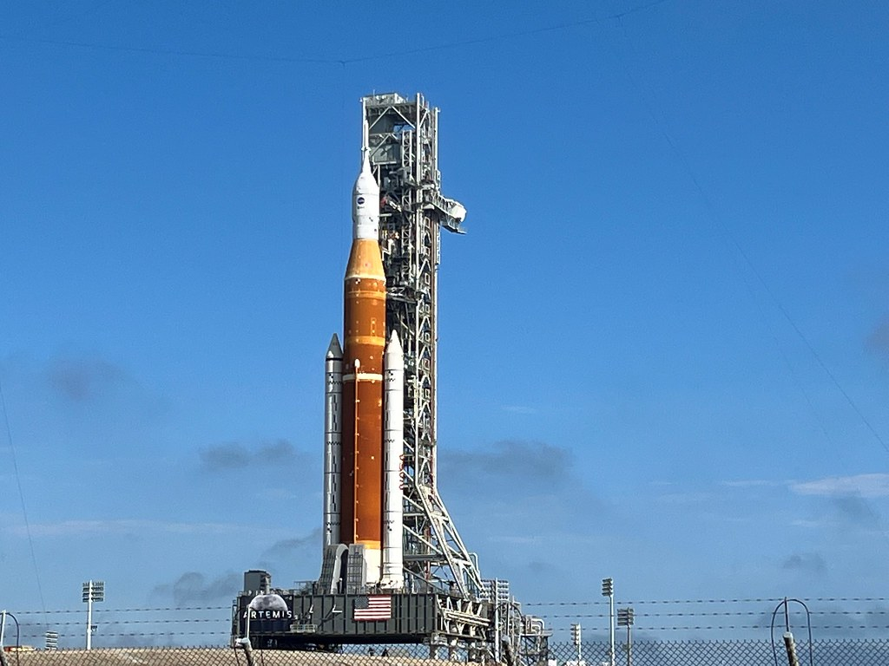

Death Valley is famously the hottest and driest place in North America, recording less than two inches of rainfall a year. But earlier this month, the California desert nearly broke its single-day record with a whopping 1.46 inches. The storms that swept through on August 5 set off flash flooding that left about a thousand people stranded in Death Valley National Park. Meteorologists said it was a once-in-a-thousand-year storm—for now, at least—and have chalked it up to the effects of the North American monsoon, also called the Southwest monsoon. What’s that, you say? A monsoon—in the United States? Although monsoons are most commonly associated with India, where heavy rain blankets the country each summer, this seasonal phenomenon occurs around the world. First recorded about a century ago, the North American monsoon season runs from mid-June through September. It reaches from Mexico—which receives as much as 70 percent of its annual precipitation during monsoon season—into portions of the southwestern United States. Although its effects can be felt as far west as Death Valley, Arizona and New Mexico bear the brunt of the monsoon in the U.S., and receive about 50 percent of their annual rainfall during the season. “Monsoon rainfall is extremely important for the desert Southwest,” says Andreas Prein, a scientist at the National Center for Atmospheric Research in Boulder, Colorado. Although the monsoon rains can be destructive, they are also life-affirming as they replenish the parched region’s water supply and bring an end to wildfire season. As climate change makes the planet even hotter and drier, Prein and other scientists are seeking to better understand the conditions that drive the monsoon—and how to predict and plan for it.
A monsoon is a seasonal change in wind patterns that delivers rainfall to a large area or continent, typically causing dry winters and wet summers. Although people often think of monsoons as a steady downpour that drenches the entire region for weeks or months on end, that’s rarely the case: Monsoons are highly variable from day to day and year to year. “Predicting exactly what places on a given day will get monsoon rainfall is extremely challenging,” says Chris Castro, an expert on the North American monsoon at the University of Arizona. “One part of town can get a good dousing of monsoon rain—like an inch or more in a given storm—and other parts of the city can be completely dry.” Similarly, some years are drier than others. In 2020, for example, the Southwest set a record for the driest and hottest monsoon season with just 2.97 inches of rainfall—followed by one of its wettest monsoon seasons ever in 2021 with 7.93 inches. But even though it might not rain all day every day from mid-June until late September, Castro explains that establishing these set dates for monsoon season help prepare the public for the hazards that come with monsoon thunderstorms—including flash flooding and dust storms from the strong winds blowing over the dry land. These storms also have implications for wildfire season, which begins in spring in the Southwest. Heavy rains can cause a debris flow—a cascading slurry of soil, rocks, water, and other materials—from areas where a recent wildfire has burned away the vegetation that would normally keep it all in place. Lightning storms early in monsoon season can also set fire to the parched landscape. But the North American monsoon also brings an end to wildfire season as the arrival of rain drives down temperatures and adds moisture to the air and soil. When monsoon season is delayed or if it’s drier than usual, wildfires have more time to burn. But understanding why monsoons are so varied from year to year starts with understanding what causes them.